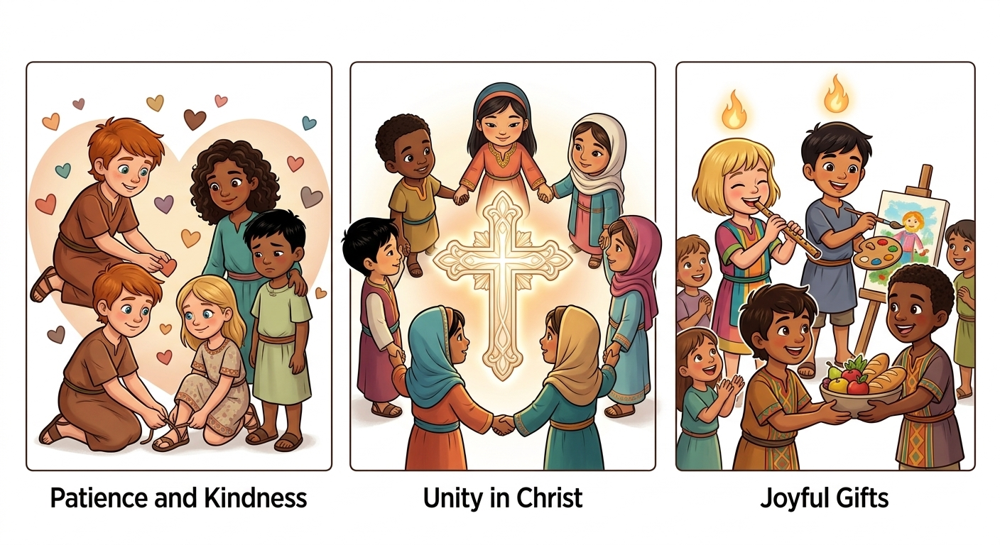
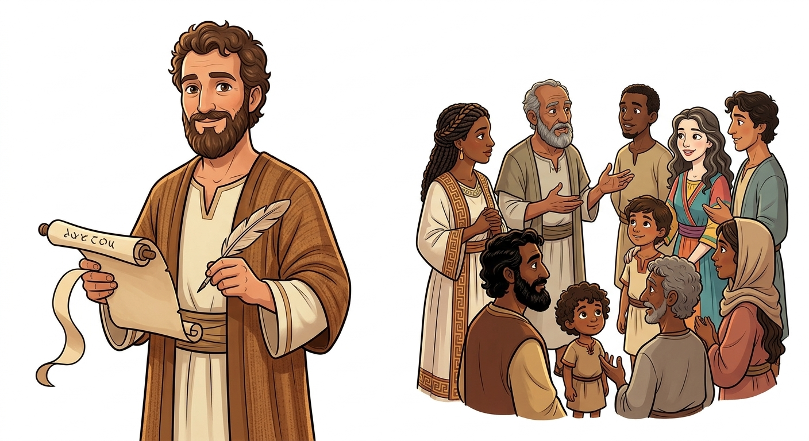
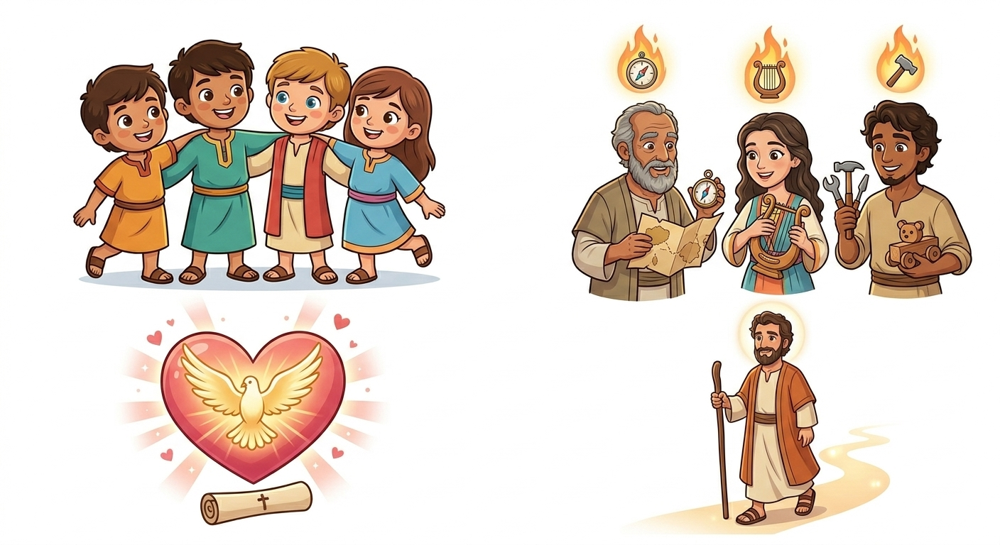
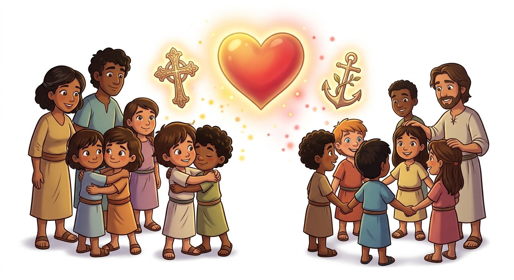
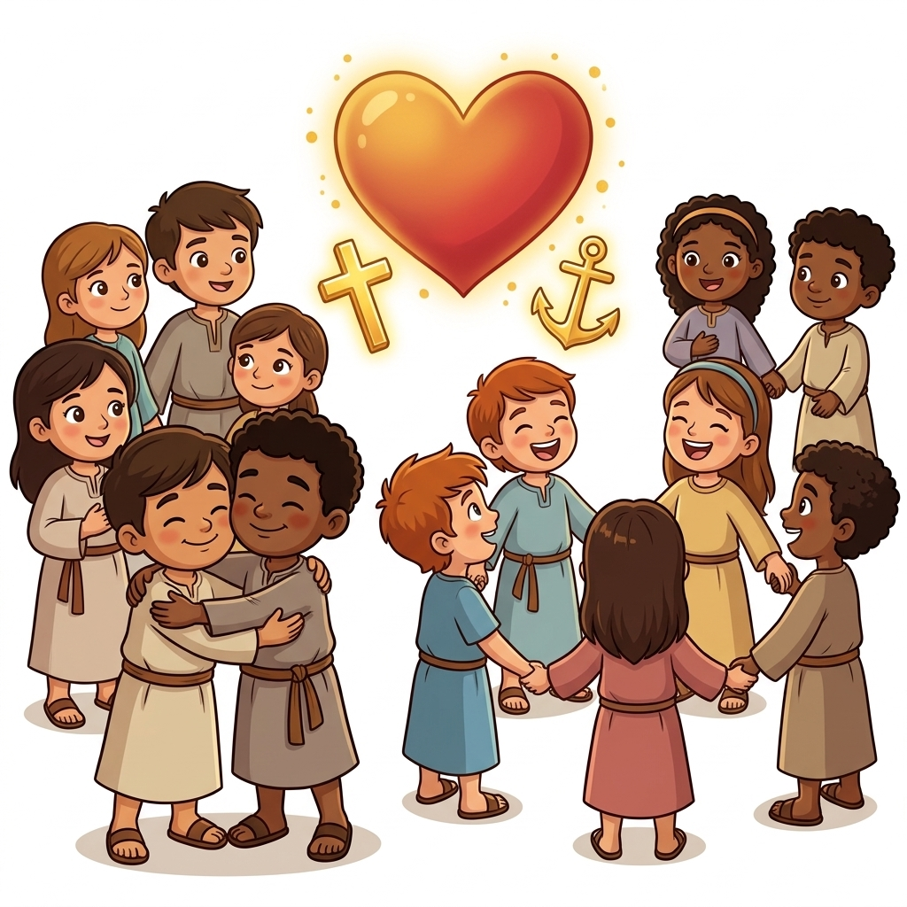
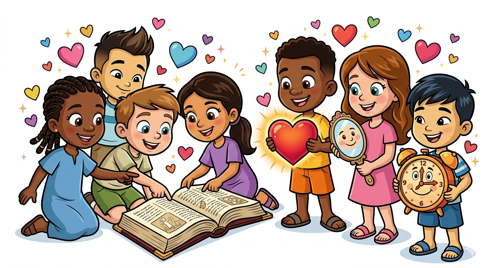

A Carta do Amor e da Unidade — Um Resumo Visual para Crianças
O amor é paciente, o amor é bondoso,
Não é invejoso, nem orgulhoso ou vaidoso.
Tudo suporta, tudo crê, tudo espera,
O amor é a maior virtude que se venera!
📖 1 Coríntios 13:4-7
Somos um só corpo, muitos membros unidos,
Cada um importante, todos bem-vindos.
Não há divisões quando Cristo nos guia,
Juntos somos fortes na harmonia!
📖 1 Coríntios 12:12-27
Deus dá dons especiais a cada pessoa,
Para servir aos outros com alegria formosa.
Use seus talentos para o bem fazer,
E a glória de Deus você vai ver!
📖 1 Coríntios 12:4-11
Paulo era um apóstolo que amava a igreja de Corinto. Ele escreveu esta carta especial para ajudar os cristãos a resolverem seus problemas e viverem melhor juntos!
Era uma igreja cheia de pessoas diferentes que precisavam aprender a se amar e viver em paz. Eles tinham muitas dúvidas e Paulo estava ali para ensinar!


Este livro nos ensina que o AMOR é o maior dom de todos! Podemos ter muitos talentos, mas sem amor, nada disso tem valor.
"Agora, pois, permanecem a fé, a esperança e o amor, estes três; porém o maior destes é o amor."
📖 1 Coríntios 13:13
Paulo mostra que quando amamos de verdade, conseguimos viver em paz, perdoar e ajudar uns aos outros. O amor de Deus transforma tudo!


Paulo escreveu esta carta com dois grandes objetivos:
Ajudar a igreja a parar de brigar, a deixar comportamentos ruins e a seguir Jesus de verdade.
Ensinar como viver unidos, se amando e usando os dons de Deus para ajudar uns aos outros.
O resultado? Uma igreja mais forte, mais amorosa e mais parecida com Jesus! 🌟
1 Coríntios 13 é chamado de "Capítulo do Amor" e é um dos textos mais conhecidos da Bíblia inteira! 💝
✨ É lido em casamentos
✨ É decorado por crianças
✨ É citado em músicas
✨ É usado em cartões e mensagens
Esse capítulo ensina exatamente como é o amor de verdade: paciente, bondoso, não invejoso, não orgulhoso... É como um manual do amor perfeito!
💡 Desafio: Que tal decorar 1 Coríntios 13:4-7?

© 2025 - Trilho Kids
Desenvolvido com ❤️ para crianças